Recursos gerados; confira os limites no documento docs/jogo/ARTES-TESTE-FANDALIN-01.md.
anselmo.webpgerado: validacao de integracao pendentebruno.webpgerado: validacao de integracao pendentedalin-assustado.webpgerado: validacao de integracao pendentedalin-mapa-idle.webpgerado: validacao de integracao pendentedalin-normal.webpgerado: validacao de integracao pendentedalin-serio.webpgerado: validacao de integracao pendentedalin-sorriso.webpgerado: validacao de integracao pendente
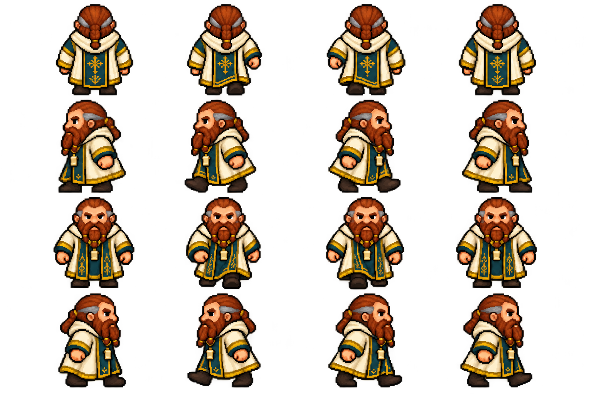
dalin-sprites-v2.webpestudo: fundo residual ou direcoes inconsistentes
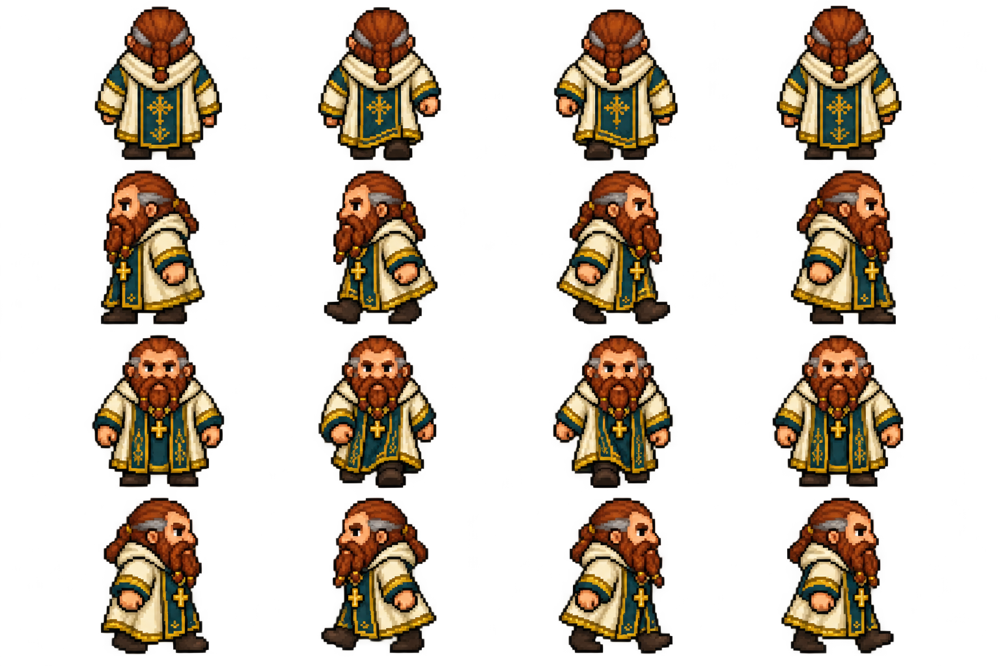
dalin-sprites.webpestudo: fundo residual ou direcoes inconsistentesedric.webpgerado: validacao de integracao pendente
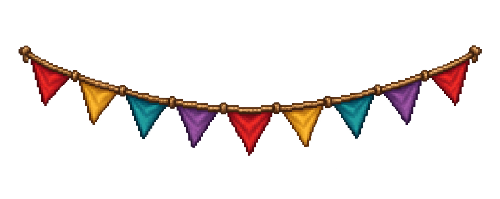
festa-bandeirolas.webpgerado: validacao de integracao pendente
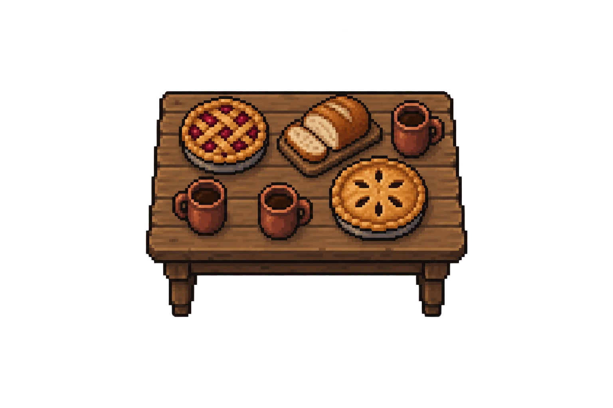
festa-mesa-limpa.webpestudo: fundo residual ou direcoes inconsistentes
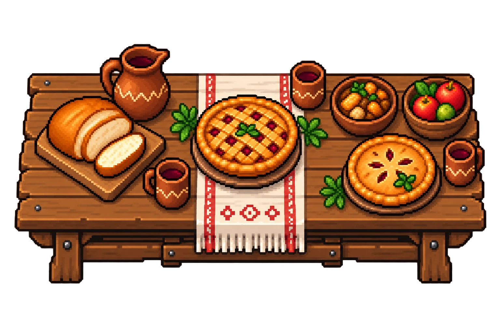
festa-mesa-v2.webpestudo: fundo residual ou direcoes inconsistentes
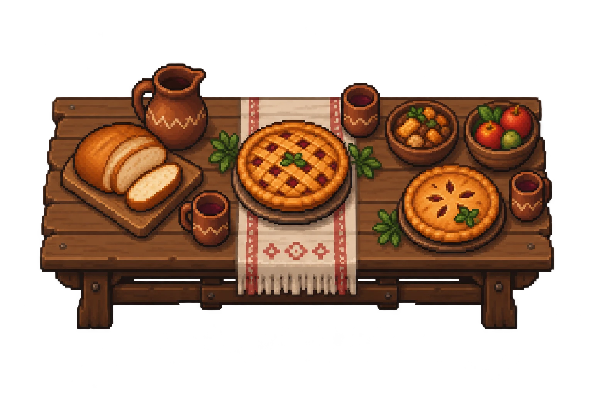
festa-mesa.webpestudo: fundo residual ou direcoes inconsistentesgenesis.webpgerado: validacao de integracao pendente
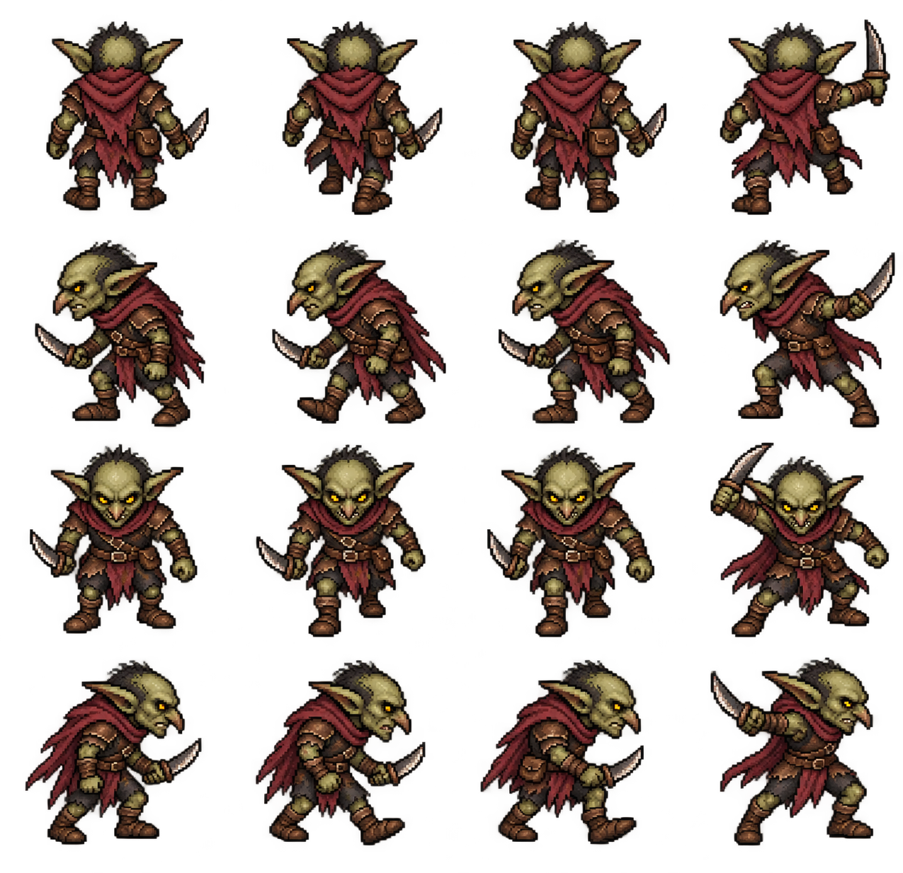
goblin-adaga-sprites.webpgerado: validacao de integracao pendente
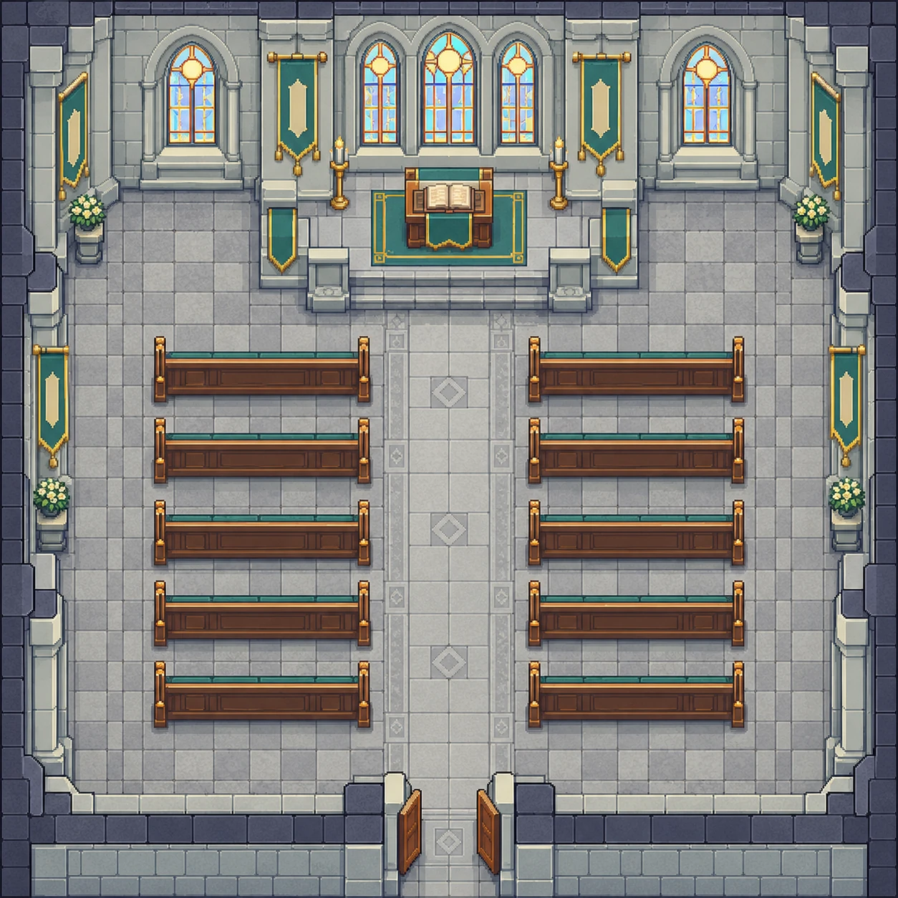
igreja-interior.webpgerado: validacao de integracao pendentelia.webpgerado: validacao de integracao pendente
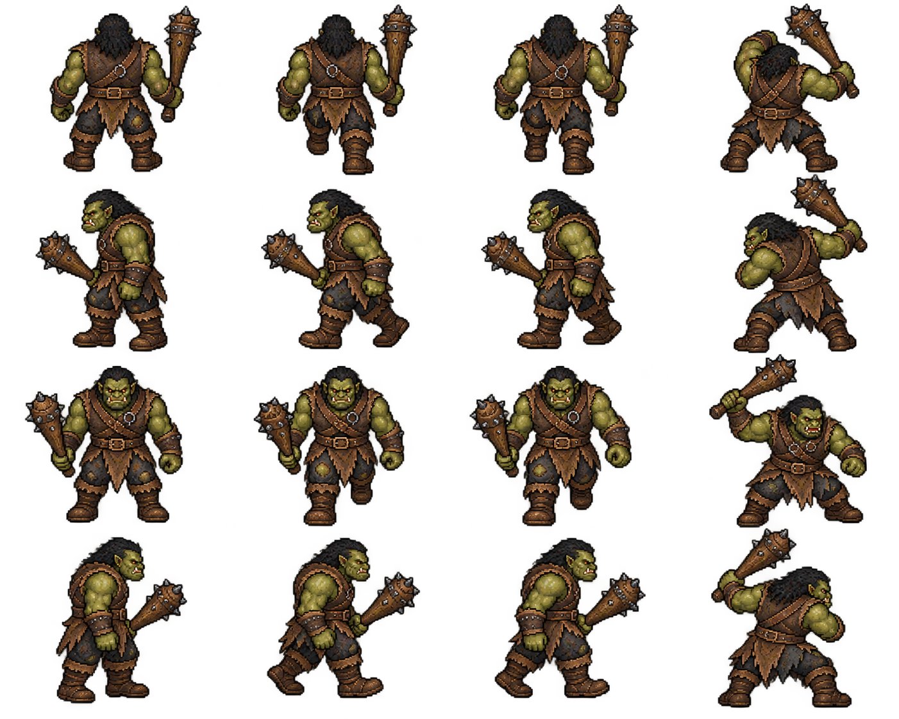
orc-clava-sprites.webpgerado: validacao de integracao pendentepipo.webpgerado: validacao de integracao pendente
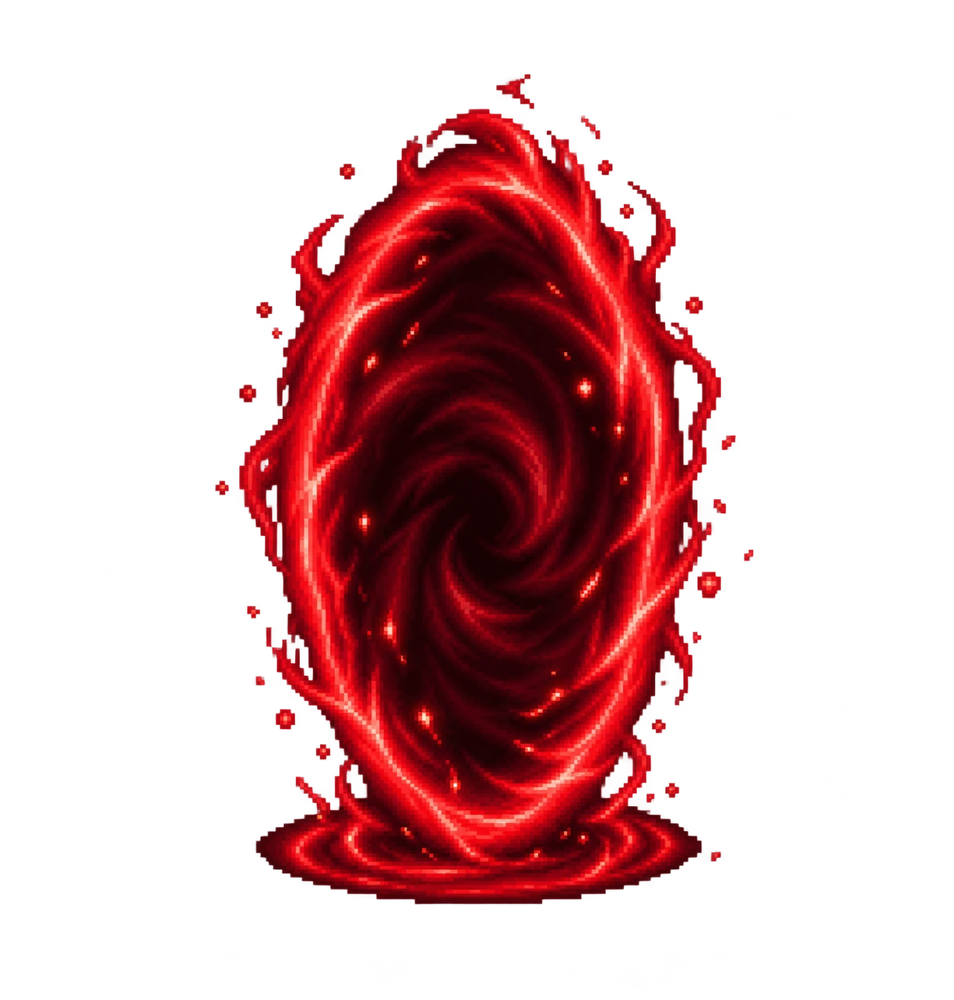
portal-aberto.webpgerado: validacao de integracao pendente
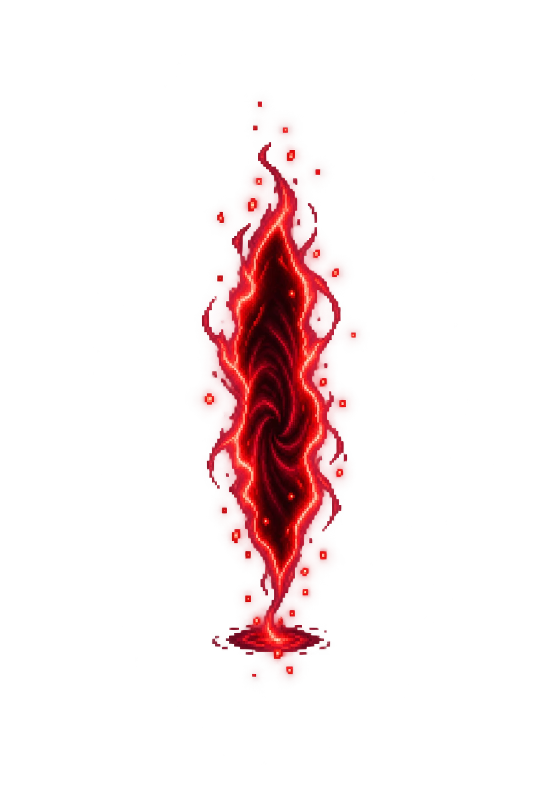
portal-fechando.webpgerado: validacao de integracao pendente
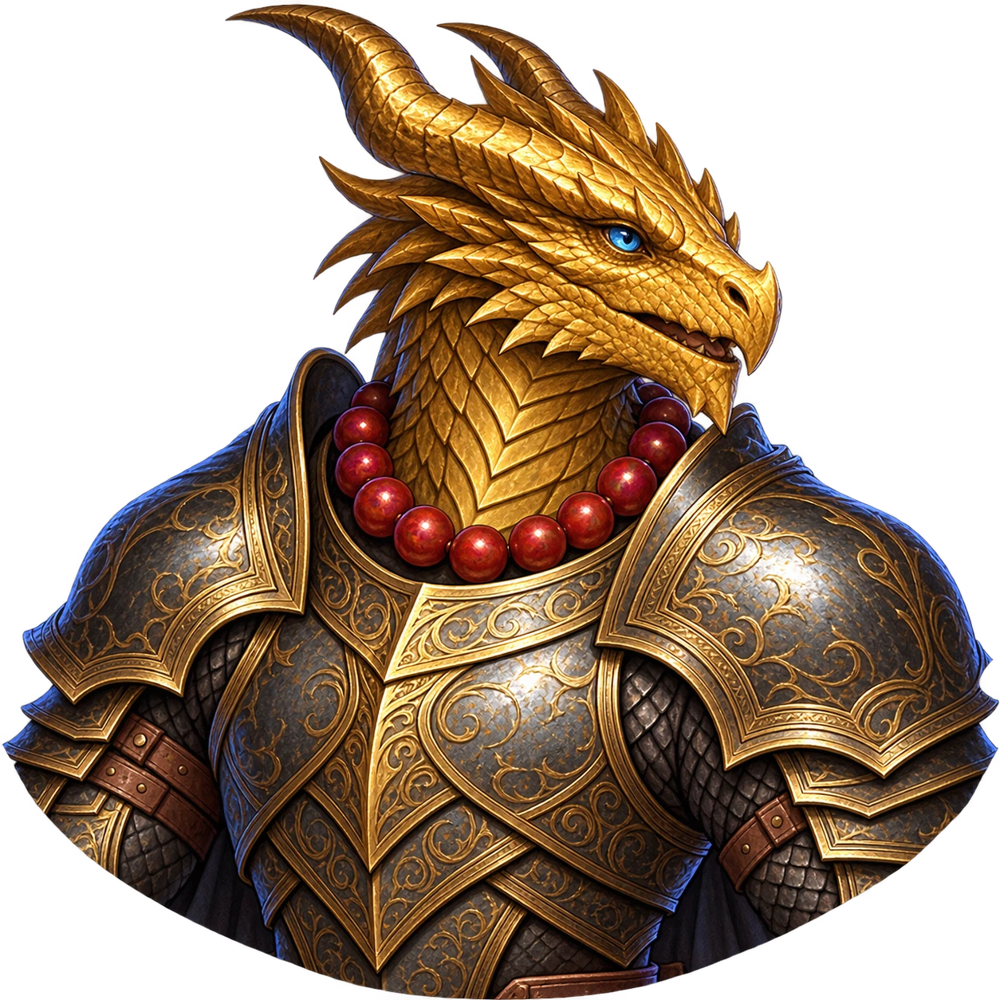
rheagon.webpgerado: validacao de integracao pendenterosa.webpgerado: validacao de integracao pendentetomas.webpgerado: validacao de integracao pendente